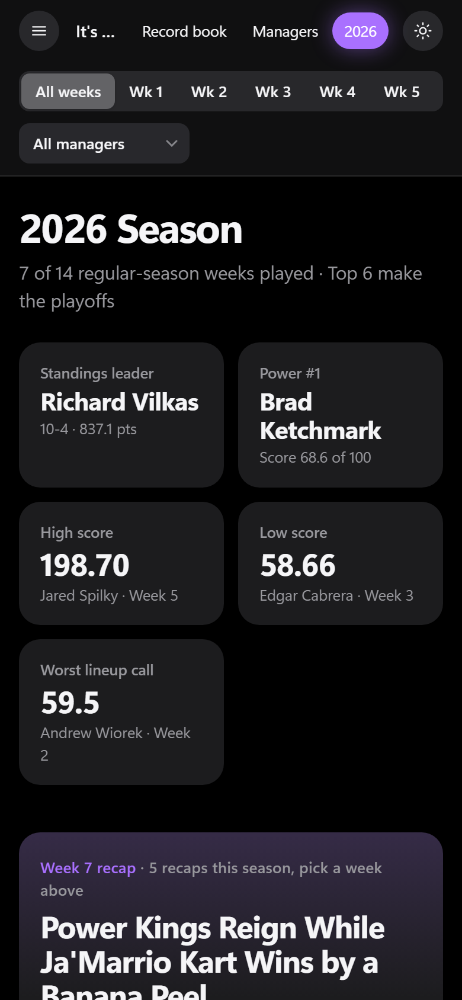
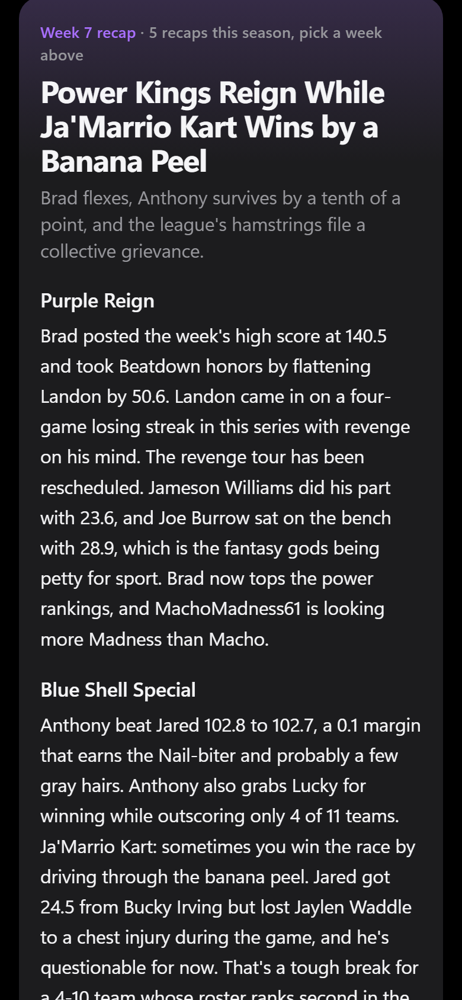
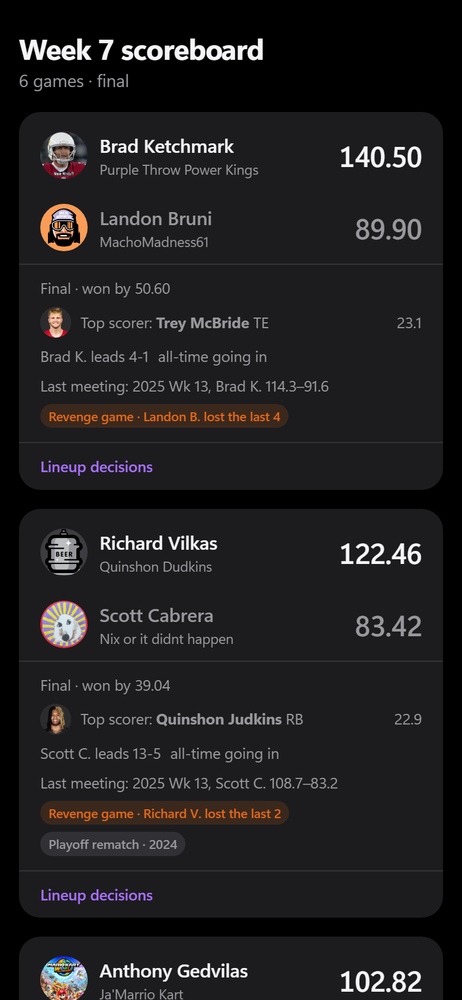
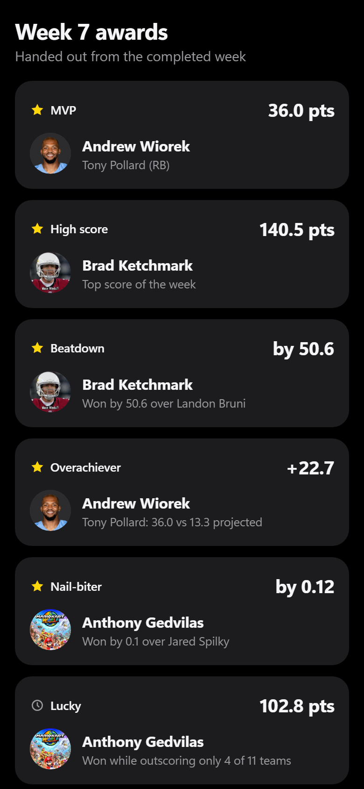
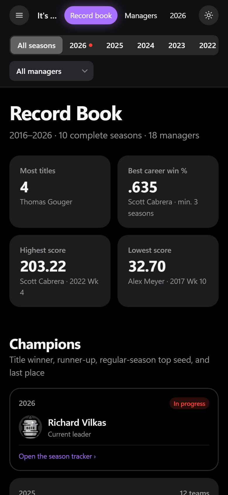
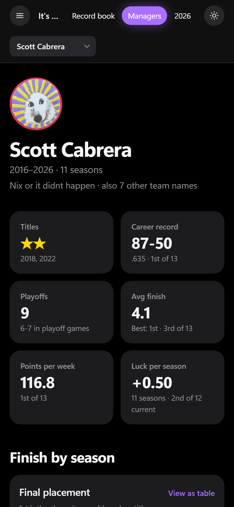

Personal project · Case study
FF League Tracker
A record book, season tracker and weekly AI-written recap for my fantasy football leagues. I built it for four leagues, and three use it every week. No recap is published until I approve it.
The problem
ESPN shows this week's matchups and this season's standings, but very little league history. Some of my leagues have played together for more than ten years. Head-to-head records, past champions and memorable weeks were only remembered in the group chat, and writing a weekly recap takes time no one has.
The goal was a site league members would open on their own, with all-time records, a live view of the season and a weekly recap they could share in the group chat, without extra work for the commissioner.
What I built
Record book
Champions, each manager's career, 18 all-time record lists, a head-to-head grid, finishes by season, draft steals and busts, and luck by season.
Season tracker
Scores with projections and win odds, weekly awards, power rankings, schedule luck, points left on the bench, injuries that affected results, and the draft board. Each matchup also shows the two managers' all-time series and their last meeting.
Manager profiles
Each manager's titles, record against every opponent, best and worst weeks, and every record they hold. Profiles also show each manager's toughest opponent and the opponent they beat most often.
AI weekly recap
A 350 to 500 word recap of the week, written only from that week's verified stats. Each Tuesday I paste a shorter version with the site link into each league's group chat. Each site can be added to a phone's home screen like an app.
What it looks like
Phone screens from my league's live site, after Week 7. Swipe to see more.






How a week runs
If one league's update fails, the others still publish. A failure opens an issue for me to fix instead of publishing bad data.
How it was built
I built this with Claude Code. I made the product decisions: what to build, who it is for, the rules for the AI, the review process and the tradeoffs described above. Claude wrote most of the code, and I review the results with league members every week. It runs on a Python data pipeline, static websites on GitHub Pages and Claude for the recaps, with no servers to maintain.
Key product decisions
- I approve every recap before it is publishedThe AI writes the draft, and nothing is published until I approve it. Reason: the recap names real friends. A wrong or unkind line in a group chat damages trust quickly, so a person reviews every recap.
- Facts firstThe AI only sees a fact sheet for the week, with scores, awards, standings, streaks and injuries, and is told not to add anything else. A separate AI pass then checks each claim against the same facts. Reason: accuracy matters most. In the first week, the check caught a line saying a team's defense "outscored his whole roster." The defense scored 30 of the team's 118 points, and the line was corrected before it was published.
- Rules for the jokesInjured players are never the target of a joke. A lineup choice only counts as a mistake if ESPN's projections favored the benched player by 1.5 points or more. Reason: the recap should be fun for everyone, so it only jokes about decisions a manager could reasonably have made differently.
- Testing a change with the leaguesAfter a league member asked me to "tell Claude to be nicer," I tested a softer recap in Week 6, with one joke per manager and a positive note for struggling teams. The leagues preferred the original style, so I switched back the next week and documented the decision. Reason: the people who read it every week should decide the tone.
- Checking the data every weekEach run checks that scores are real, records add up, lineups match and data feeds are not empty. If a check fails, the update is marked "do not merge" with the reason. Reason: ESPN's data feed is unofficial and can change without notice. I would rather skip an update than publish wrong numbers. It is the same data quality discipline I use with client data at work.
- One site per leagueEach league has its own web address, name and icon. The code is private and shared across all of them. Reason: each league's history belongs to that league, and a separate site with its own icon feels like the league's own app. Adding a league is mostly configuration, not new code.
Constraints I worked through
| Constraint | How I handled it |
|---|---|
| Inconsistent ESPN data across ten-plus seasons | I converted every season to one format. Where a season is missing data, such as draft data before 2018 in the two oldest leagues, it is left out of those stats instead of estimated. |
| Privacy of league members | ESPN member IDs can be used to sign in to ESPN, so the public sites use substitute IDs. Before each code change is saved, I check that no passwords or keys are included. |
| Cost | About $0.19 to write and $0.06 to fact-check each recap, roughly $5 for all 20 so far. Each recap is saved once and only rewritten when I ask. |
| Yahoo restricted access to its fantasy data | I built the Yahoo sign-in and applied for approved access instead of working around the restriction. Yahoo approved it, so a fifth league is next. |
Early results
October 4 to 28, for the three leagues that use it weekly. The counts include my own visits. The counter does not use cookies, so it counts visits, not individual people.
- Used in all three leaguesNever Sunny 81 visits, Film Room 56, Valleyboiz+ 53.
- Visits from other states82 visits (43%) came from 10 states other than Arizona, where I live, led by Illinois (55) and Georgia (14).
Visits by day of the week
Arizona time. Hover over a bar to see its count.
| Mon | Tue | Wed | Thu | Fri | Sat | Sun |
|---|---|---|---|---|---|---|
| 23 | 101 | 42 | 6 | 9 | 7 | 2 |
What league members said
"Go to the website Scott made for our league. And go to manager profiles."
"I enjoy these every week."
"I liked these summaries more when my team was good."
By Week 6, a member of one league was posting the recap and the season tracker link in the group chat himself.
What I learned: the weekly recap brings people back, and most visits go to the season tracker. I expected the all-time record book to be the main draw, but it is used more as a reference. League history is most interesting as context for this week's games, which is why each matchup on the season tracker already shows the all-time series. During the season, new work goes to the season tracker first.
Shipped so far
- Record book, season tracker and AI recapsOct 3Weekly automation with a fact-check and approval from my phone.
- Four leagues, four sitesOct 4A site for each league, home-screen icons, data checks on every run, and a visit counter that does not use cookies. Three leagues adopted it. The fourth site stays up to date, but I don't share it with that league until its commissioner agrees.
- Sunday night scoresOct 5Scores update Sunday night without a recap, and publish only if the checks pass.
- Fixes from weekly reviewsOct 6-27Each week's review becomes a written rule: lineup comparisons that make sense, injury timing, kicker injuries left out of the recap, rosters in each league's lineup order, and the recap tone test described above.
What's next
Ordered by what league members will notice first.
- Yahoo leagueNextAccess is approved and the sign-in is built. It will be a fifth league on the same system.
- Season tracker as the starting pageNextDuring the season, open each site on the season tracker instead of the record book, and check whether Tuesday visits continue through the playoffs.
- "Ask the league" assistantLaterA tool that answers questions using the league's own data. I would test it in one league first, with a passcode, a daily limit per person and a monthly cost cap.
- Commissioners approve their own recapsLaterOnce the fact-check has a long record with few corrections, each league's commissioner could review its recap instead of me.